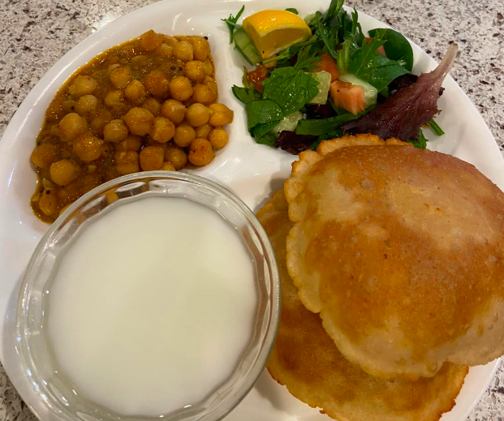

Hello!
Welcome to Cruising Celiac, a website for South Asians with gluten intolerances! Use this website to find new gluten free restaurants in the Bay Area, recipes, blogs, resources, and more! See our featured recipes and articles below.

Masala Guide
All South Asians need their favorite masalas to cook good food, but did you know that many have wheat mixed in? Here’s how to avoid cross contamination in your masalas.

Chole Bhature
Chole Bhature is a delicious meal that will have you making more every week. Made with chickpeas, this meal ranks highly with kids and adults.